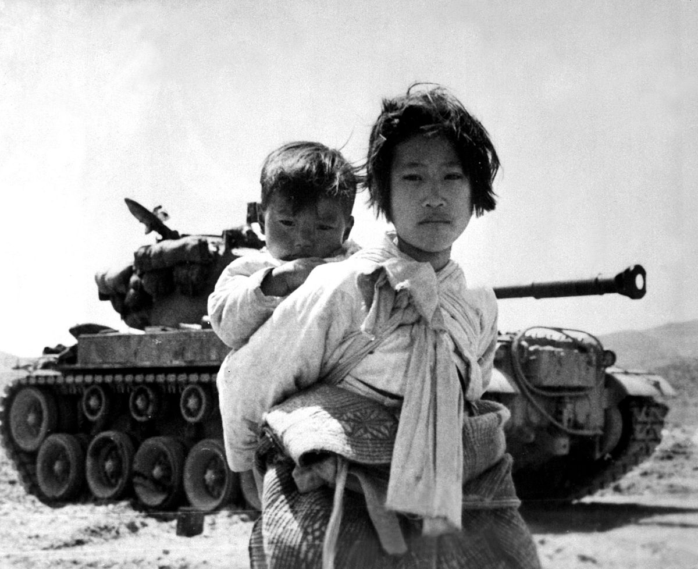

La Guerra Fría es el periodo entre el fin de la Segunda Guerra Mundial en 1945 y la caída de la Unión Soviética en 1991 que dividió al mundo en el bloque occidental capitalista, liderado por Estados Unidos, y el oriental comunista, encabezado por la URSS. Y así fue que se enfrentaron en un constante enfrentamiento, las dos potencias surgidas de la segunda guerra mundial. Varias generaciones crecieron bajo la amenaza de un conflicto nuclear global que podía estallar en cualquier momento. No llegó a suceder, pero durante 40 años fue una posibilidad cotidiana.
La rivalidad de las dos superpotencias
La ruptura definitiva entre Estados Unidos y la URSS llegó en 1947. La doctrina Truman consideraba que el mundo estaba dividido en dos bloques irreconciliables, donde Estados Unidos defendía la democracia y la libertad frente a una URSS totalitaria y hostil a los valores occidentales, que suponía una amenaza a contener.
Los gobiernos de ambas superpotencias aceptaron el reparto global de fuerzas establecido al final de la Segunda Guerra Mundial. Según Hobsbawn el equilibrio de poderes era desigual pero indiscutido pero era porque la URSS no quería seguir expandiéndose y EEUU al contrario, sí lo desea. La URSS dominaba la zona ocupada por el ejército rojo y otras fuerzas armadas comunistas. Mientras que los EEUU controlaban el resto del mundo capitalista, además del hemisferio occidental y los océanos.
La situación fuera de Europa no estaba tan clara. Ya se preveía el fin de los imperios coloniales. Esta fue la zona en la que las dos superpotencias siguieron compitiendo en busca de apoyo e influencia durante toda la guerra fría y, por lo tanto, fue la de mayor fricción entre ambas potencias. La tensión aumentó con la crisis de Berlín en 1949 —que dividió Alemania en un país capitalista y otro comunista—, el final de la guerra civil china ese mismo año y el inicio de la guerra de Corea al siguiente. Además, la URSS probó con éxito su primera bomba atómica, lo que disuadió a Estados Unidos e instauró el temor a la destrucción mutua. Aunque hubo episodios de riesgo límite, se pudo evitar el enfrentamiento nuclear. Además la URSS se hizo con armas nucleares, ambas superpotencias dejaron de utilizar la guerra como arma política en sus relaciones mutuas, ambas se sirvieron de la amenaza nuclear, aunque hubo episodios de riesgo límite, se pudo evitar el enfrentamiento nuclear. Así, de esta manera, EEUU aceleró las negociaciones de paz en Corea y Vietnam (1953-1954), y la URSS para obligar a Gran Bretaña y a Francia a retirarse de Suez en 1956.
Sin embargo, las dos superpotencias se enfrentaron indirectamente en varios conflictos. Como respuesta a la tensión bipolar, India, Egipto, Indonesia y Yugoslavia impulsaron en 1961 el Movimiento de los Países No Alineados, que buscaba agrupar a los que no pertenecieran a ninguno de los dos bloques para asegurar su independencia de intereses extranjeros. El grupo sigue activo y actualmente representa a casi dos tercios de los miembros de la ONU, pero con la caída de la URSS perdió su sentido y, con ello, muchos apoyos.
Luego de la Segunda Guerra Mundial, la guerra fría se basaba en en la creencia occidental, de que la era de las catástrofes no se había acabado, y que el triunfo del capitalismo mundial y de la sociedad liberal distaba mucho de estar garantizado.
La Guerra Fría terminó en 1991 con el fin de la URSS, que ya arrastraba décadas de dificultades. El inmovilismo político del presidente soviético Leonid Brézhnev le impidió responder con eficacia a la crisis del petróleo de 1973 y a las demandas políticas de finales de esa década. Un gobierno que desconfiaba de una población gran parte de la cual había mostrado una clara y comprensible falta de adhesión al régimen. La pérdida de legitimidad interna, junto a la fallida intervención en Afganistán, erosionó el prestigio internacional de la URSS. Mientras, la Administración de Ronald Reagan reforzaba la capacidad militar de Estados Unidos. La urss necesitaba toda la ayuda económica posible, y por lo tanto no tenían ningún interés en enemistarse con la única potencia que podía proporcionarles, los eeuu. Sin embargo, la política de enfrentamiento entre ambos surgió de su propia situación.
Finalmente Gorbachov renunció a su cargo y la URSS se disolvió en diciembre de 1991, abriendo paso a una época de hegemonía estadounidense.
Se inicia con el fin de la segunda guerra mundial en 1945, hasta la crisis de 1973. Los países europeos y japón se plantearon como prioridad absoluta la recuperación económica después de la guerra, Estados Unidos no vio afectada su economía por la guerra. Esta edad de oro permaneció anclada en el núcleo central de los países capitalistas desarrollados, que, a lo largo de este período se caracterizó por la reestructuración del capitalismo y su internacionalización; alrededor de tres cuartas partes de la producción mundial y más del 80 por 100 de las exportaciones de productos elaborados. La economía mundial crecía a un ritmo explosivo.
La gran expansión mundial fue un proceso de ir acortando distancias o, en los Estados Unidos, la continuación de viejas tendencias. El fordismo como modelo de producción en masa. La expansión económica fue la revolución tecnológica. No sólo contribuyó a la multiplicación de los productos de antes, mejorados, sino a la de productos desconocidos, incluidos muchos que prácticamente nadie se imaginaba siquiera antes de la guerra.
Se da el fin de los años dorados porque la hegemonía de los eeuu entra en decadencia en los 70. También se agotaron las manos de obra y no se podía producir más. Crisis del petróleo en el 73.